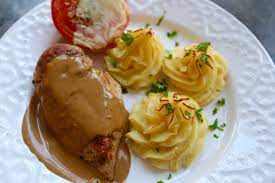

- 12 Kycklinginnerfiléer
- Valfri kryddning
- 1 kg Mjölig Potatis
- 1 dl Vispgrädde
- 2 Äggulor
- Salt
- Svartpeppar
Du behöver:
Kyckling med Duchessepotatis
(4 portioner)
1. Sätt ugnen på 250°C
2. Skala potatisen och koka den mjuk
3. Lägg potatisen i en bunke och arbeta med en potatiskross tills potatisen har blivit helt mosad
4. Blanda ner grädde och äggulor. Salta och peppra
5. Spritsa ut moset till små fina toppar på en plåt med bakplåtspapper
6. Grädda i ugnen i ca 15 min eller tills de får en fin färg
7. Stek kycklingfiléerna och krydda efter smak
Källa: Middagstipset (s.53)